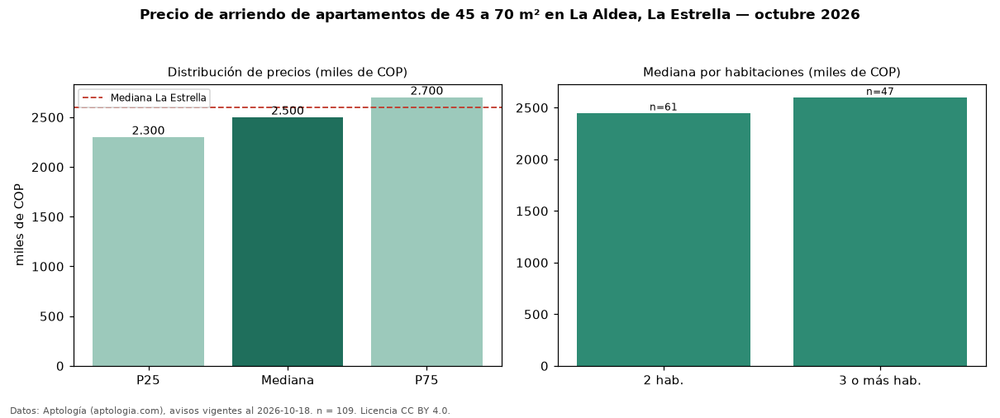

Precio de arriendo de apartamentos de 45 a 70 m² en La Aldea, La Estrella — octubre 2026
En La Aldea, La Estrella, la mediana de canon mensual de apartamentos de 45 a 70 m² es COP 2,50 millones, según 109 avisos vigentes. Frente a la mediana de todos los apartamentos en arriendo de La Aldea (COP 2,60 millones, n = 155), queda 4 % por debajo; este segmento reúne el 70 % de esos avisos. Por metro cuadrado, la mediana es COP 40.625/m² al mes (n = 109), 2 % por encima del conjunto de referencia (COP 39.706/m²). El área mediana anunciada es 61 m². El segmento con más oferta es el de 2 habitaciones (61 avisos, mediana COP 2,45 millones); pasar de 2 habitaciones a 3 o más habitaciones cambia la mediana +6 %. El estrato más frecuente es 4 (73 % de los avisos con estrato). La mediana de todos los apartamentos en arriendo de La Estrella es COP 2,60 millones (−4 % de diferencia). La mitad central de los avisos va de COP 2,30 millones a COP 2,70 millones (razón 1,2), una dispersión baja. Datos: Aptología (aptologia.com), CC BY 4.0 — https://www.aptologia.com/arriendo/la-estrella. Archivos: PDF, CSV con las cifras y gráfica PNG.

| Avisos únicos | 109 |
|---|---|
| Percentil 25 | COP 2.300.000 |
| Mediana | COP 2.500.000 |
| Percentil 75 | COP 2.700.000 |
| Mediana por m² | COP 40.625 |
Fuente: avisos vigentes de portales inmobiliarios recopilados por Aptología, deduplicados (mínimo 30 avisos únicos por celda). Precios pedidos, no cerrados. Fecha: 2026-10-18.